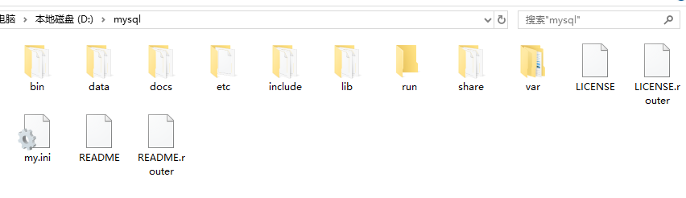
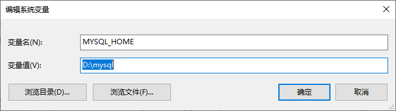
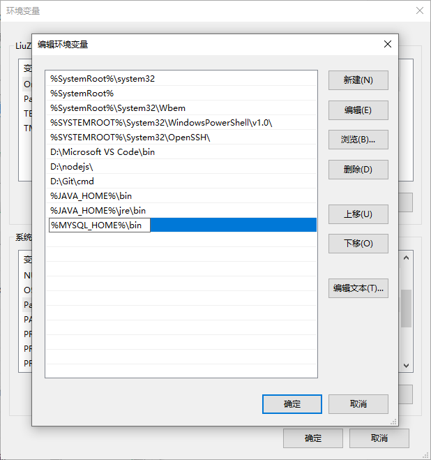

Installing MySQL on Windows
Installing MySQL on Windows is relatively simple. The latest version can be downloaded from MySQL Downloads (for more detailed installation: Installing MySQL on Windows).

Click the Download button to go to the download page, then click “No thanks, just start my download” in the image below to download immediately:

After downloading, extract the file to look like this (I placed the installation files in D:\mysql):

Next, we need to configure MySQL’s configuration file
Open the extracted folder D:\mysql, create a my.ini configuration file in this folder, and edit my.ini with the following basic information:
[client] |
Next, let’s start the MySQL database:
Open cmd command line tool as administrator, switch directory:
cd C:\web\mysql-8.0.11\bin |
Initialize the database:
mysqld --initialize --console |
Note: This might cause an error:
mysqld : The term "mysqld" is not recognized as a cmdlet, function, script file, or operable program name. Please check the spelling of the name, and if a path is included, verify that the path is correct and try again.
There are two solutions: 1. Add ./ before the command like:$ ./mysqld --initialize --console
2. Configure MySQL environment variables
After execution, it will output the initial default password for the root user, such as:
... |
<!wbLjV?/3uq is the initial password, which will be needed for subsequent logins. You can also change the password after logging in.
Enter the following installation command:
mysqld install |
Start by entering the following command:
net start mysql |
Logging into MySQL
When the MySQL service is running, we can log into the MySQL database using MySQL’s built-in client tool. First, open the command prompt and enter the following format:
mysql -h hostname -u username -p |
Parameter description:
- -h : Specifies the MySQL hostname to log into. This parameter can be omitted when logging into the local machine (localhost or 127.0.0.1);
- -u : The username to log in with;
- -p : Tells the server that a password will be used to log in. If the username and password to log in are empty, this option can be ignored.
If we want to log into the local MySQL database, just enter the following command:
mysql -u root -p |
Press Enter to confirm. If the installation is correct and MySQL is running, you’ll get the following response:
Enter password: |
If a password exists, enter the password to log in; if not, just press Enter to log in. After successful login, you’ll see the “Welcome to the MySQL monitor…” prompt.
Then the command prompt will wait for command input with mysq> and a blinking cursor. Enter exit or quit to log out.
Configure MySQL Environment Variables
During the installation above, we saw that MySQL’s default installation path is: D:\mysql. Right-click on My Computer → Properties → Advanced System Settings → Environment Variables → New MYSQL_HOME, enter the installation directory:

Find path and edit: enter %MYSQL_HOME%\bin

Open cmd and enter mysql to test
Connecting to MySQL in Navicat for MySQL
Download Navicat for MySQL. After installation, run Navicat.
Client uses Navicat for MySQL. MySQL 8.0 is installed locally. But when connecting, it prompts:

Solution:
This line of code has two meanings: First, modify root’s password to ‘root’, abandoning the old password. Second, use mysql_native_password to encode the new password.
ALTER USER 'root'@'localhost' IDENTIFIED WITH mysql_native_password BY 'root'; |
For detailed error information, see Navicat for MySQL connection error: 1251…